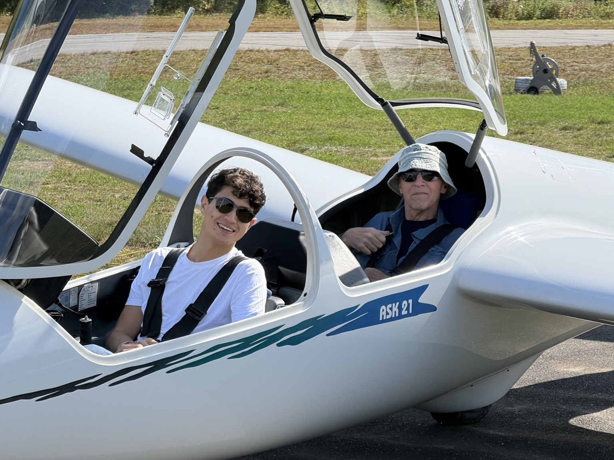
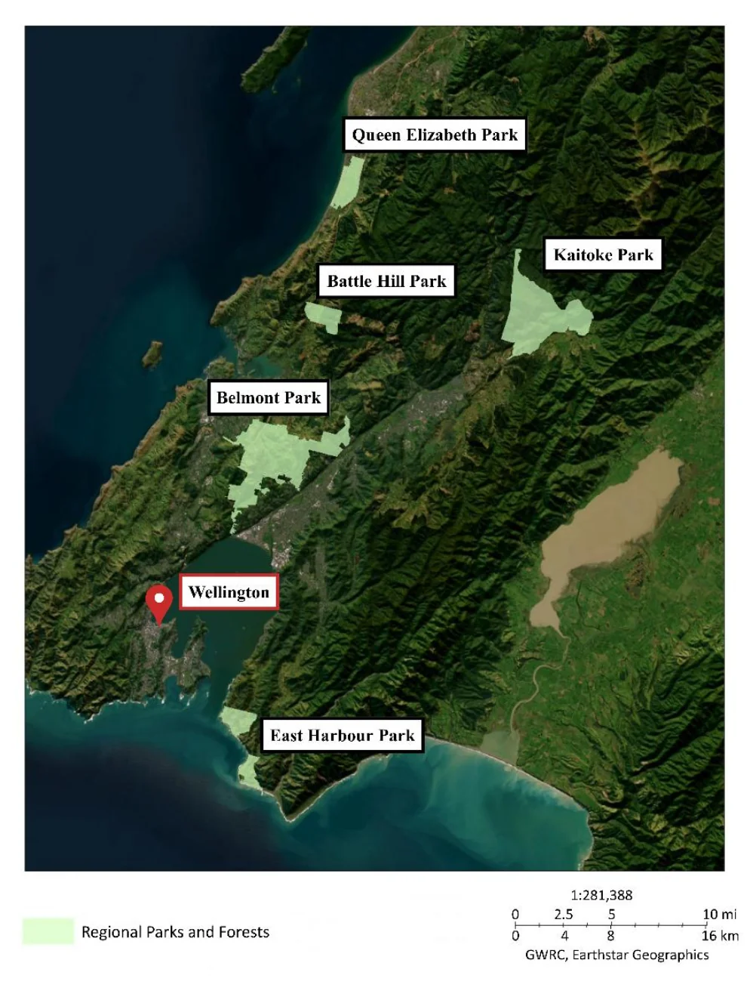
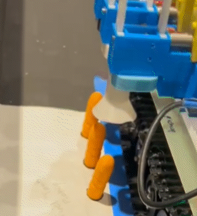
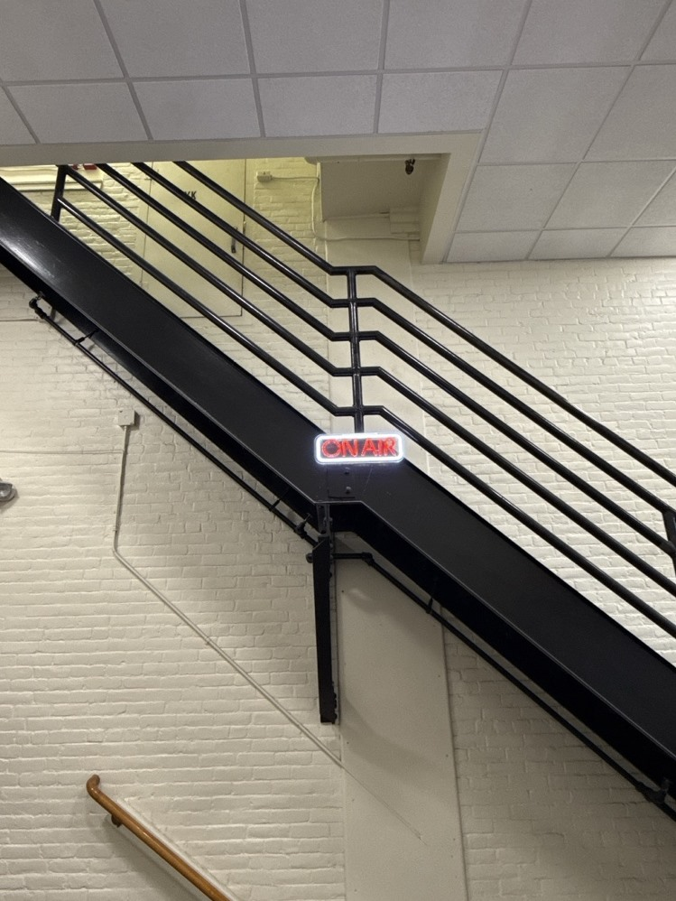
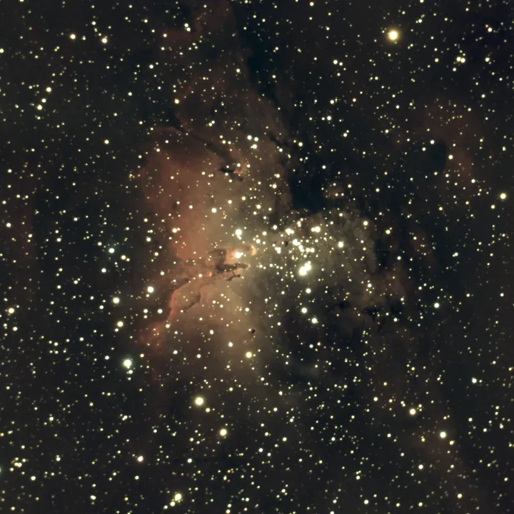
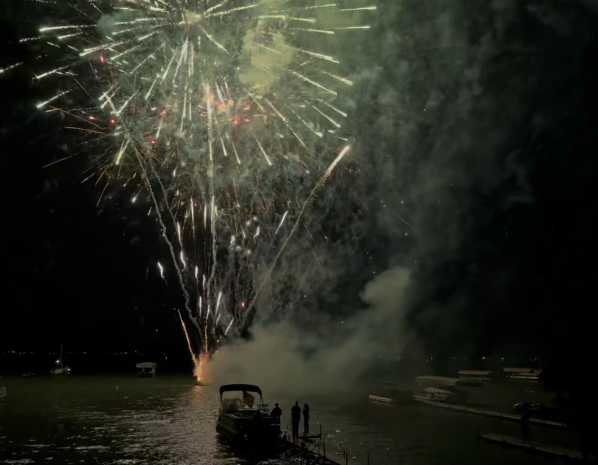

Detailed project work
Engineering Portfolio
Selected work across remote sensing, embedded systems, mechanical design, digital preservation, and hands-on fabrication.

My Mission Statement
I have always been inspired by space exploration; it is my belief that exploration is the most natural thing that comes to humans as a species.
Humans are at their best when they've climbed one peak, only to see the next one in the distance and feel the urge to keep going. That is the mentality that takes humans to space, to Mars, and eventually, beyond.
Someday, I would like to see Earth's entirety with my own eyes and perhaps even step on the surface of Mars. It is the whole reason why I study to become an aerospace engineer. I strive to build beautiful things, climb those mountains, and "boldly go where no man has gone before."
I am excited to show off some of my hobbies, projects, and work samples.
- Thomas
A note before the projects
Some of these were assigned, some were team projects, and others began as hands-on work for communities I care about. They cover different ground: preserving a century-spanning archive, running an embedded system in perpetuity, designing something to fail safely, cleaning a messy multi-year dataset, and owning the CAD on a team build completed in one semester. Together they reflect the kind of thoughtful, durable engineering work I want to do.
Engineering & Data Projects
WPIWA QSL Archive Migration
Processing 8,000+ historical QSL contact receipts from a 116-year analog database for archival preservation.

IQP: Remote Sensing & ArcGIS
Five-year forest restoration dataset across 5 parks and ~343 hectares for the Greater Wellington Regional Council (team project).

IEEE Robotics Compliant Gripper
Single-motor compliant gripper with a shear-pin mechanical fuse. Seven prototypes; reset cut from 3 min to under 1.

ESP32 Presence Monitoring System
About $30 in parts. Running 24/7 since deployment with zero false triggers, using a moving-average filter for reliable occupancy detection.

Lipscomb Microhome
12×7 ft dual-power microhome built in one semester by a freshman team of 14 and donated for emergency shelter (team project).
Interests & Hobbies

Amateur Astrophotography
Deep-sky imaging telescopes: setup, alignment, and calibration.

Annual Fireworks Display
Yearly show I have been running since 2018. ~90 mortars over open water, remotely detonated; drew nearly 2,000 spectators last year.